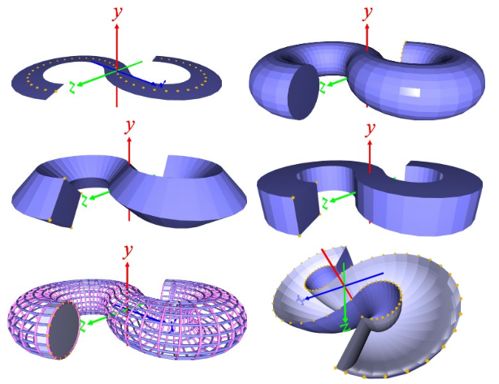
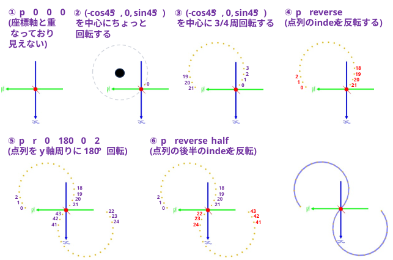
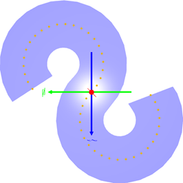
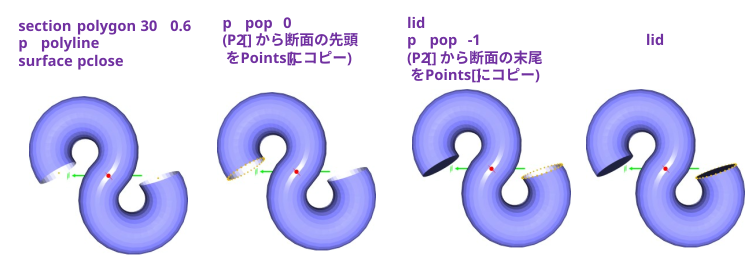
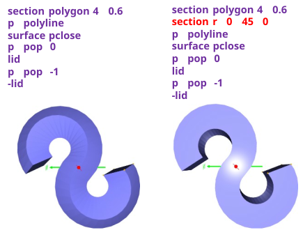
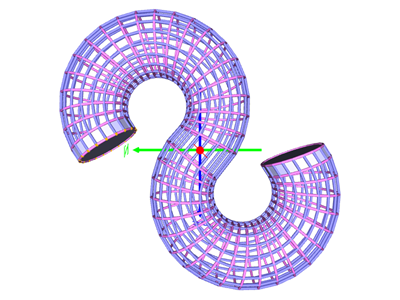
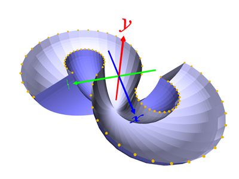

① 原点に点を作る
・p 0 0 0
② (cos45°,-sin45°) を中心にちょっと回転する
(後で原点を中心に点列を回転して対称形をつくる。原点に点があると二重になってしまうのでずらしておく)
・p g t -np.cos(np.deg2rad(45)) 0 np.sin(np.deg2rad(45)) r 0 360/30 0 t np.cos(np.deg2rad(45)) 0 -np.sin(np.deg2rad(45))
③ (cos45°,-sin45°) を中心に 3/4 周回転する
・p g t -np.cos(np.deg2rad(45)) 0 np.sin(np.deg2rad(45)) r 0 360/30 0 t np.cos(np.deg2rad(45)) 0 -np.sin(np.deg2rad(45)) int(30*3/4)
・p2 p2p ･･･ 複数回回転した点を P2[] から Points[] にコピーする
④ 点列(Points[])のindexを逆順にする
・p reverse
⑤ 点列を y 軸周りに 180°回転する
・p r 0 180 0 2
・p2 p2p ･･･ 複数回回転した点を P2[] から Points[] にコピーする
⑥ 点列の後半の index を反転する
・p reverse half
⑦ 点列を保存する
・p save s.npy

※ 以下の手順は、Points[] に Sっぽい軌道の点列が格納されているとする。
Sっぽい軌道を直線でなぞる
・section polygon 2 0.6
・p polyline
・surface

Sっぽい軌道を円でなぞる
・section polygon 30 0.6
・p polyline
・surface pclose ･･･ Sっぽい軌道を円でなぞる
・p pop 0 ･･･ 断面の先頭を Points[] にコピー
・lid ･･･ 断面の先頭にフタをする
・p pop -1 ･･･ 断面の末尾を Points[] にコピー
・lid ･･･ 断面の末尾にフタをする

Sっぽい軌道を四角でなぞる
・section polygon 4 0.6
・p polyline
・surface pclose ･･･ Sっぽい軌道を四角でなぞる
・p pop 0 ･･･ 断面の先頭を Points[] にコピー
・lid ･･･ 断面の先頭にフタをする
・p pop -1 ･･･ 断面の末尾を Points[] にコピー
・lid ･･･ 断面の末尾にフタをする
・section polygon 4 0.6
・section r 0 45 0 ･･･ 断面の四角形を y 軸周りに 45° 回転する
・p polyline
・surface pclose ･･･ Sっぽい軌道を四角でなぞる
・p pop 0 ･･･ 断面の先頭を Points[] にコピー
・lid ･･･ 断面の先頭にフタをする
・p pop -1 ･･･ 断面の末尾を Points[] にコピー
・lid ･･･ 断面の末尾にフタをする

Sっぽい軌道を円でなぞった骨格をメッシュ化する
・section polygon 20 0.5
・p polyline
・c pink
・SKELETON ･･･ P2[] の内容をパイプでメッシュ化する。大文字版は始点と終点をつなぐ
・p2 transpose
・c default
・skeleton ･･･ P2[] の内容をパイプでメッシュ化する。小文字版は始点と終点はつながない
・surface eclose 0 0 ･･･ リングの先頭をメッシュ化する
・surface eclose 42 42 ･･･ リングの末尾をメッシュ化する
・p2 transpose
・lid
・p pop 0
・-lid
※ SKELETON, skeleton の処理には時間が掛かるので気長に待つ･･･

Sっぽい軌道を直線でなぞった輪郭で面を張る
・section polygon 2 0.5
・p polyline
・p2 transpose
・p2 p2p
・p reverse half
・-lid -1 sphere
